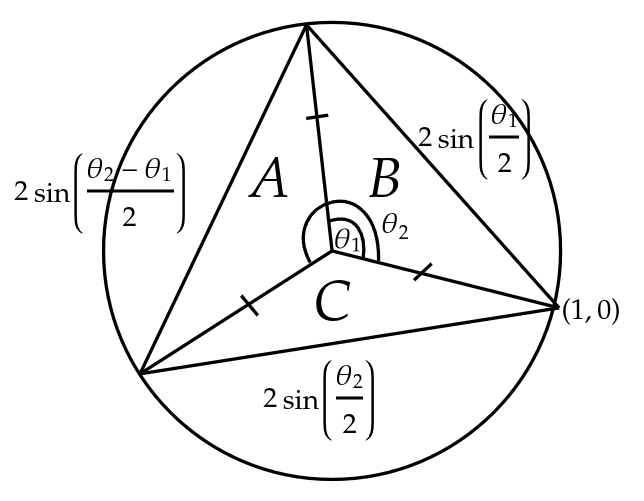

Fixing one point at \((1,0)\), we get a general triangle:
The area of region \(A+B+C\) is given as:
\[F(\theta_1, \theta_2) = \frac{1}{2}(\sin{\theta_1} - \sin{\theta_2} + \sin(\theta_2 - \theta_1))\] \[\frac{1}{2}(\sin{\theta_1} - \sin{\theta_2} + \cos{\theta_1}\sin{\theta_2} - \cos{\theta_2}\sin{\theta_1}) = \frac{1}{2}(\sin{\theta_1}(1-\cos{\theta_2}) + \sin{\theta_2} (\cos{\theta_1} -1))\]As we move \(\theta_1\) and \(\theta_2\), the piece-wise cumulative sum of the areas can be given by the double integral below:
\[\sum A = \int_0^{2\pi} \int_0^{2\pi} |F| \cdot d\theta_1 d\theta_2\] Because \(F=0\) when \(\theta_1 = \theta_2\), we have to split the integral into two parts on \(\theta_1 = \theta_2\), \[\sum A = \left|\int_0^{2\pi} \int_0^{\theta_2} F \cdot d\theta_1 d\theta_2\right| + \left|\int_0^{2\pi} \int_{\theta_2}^{2\pi} F \cdot d\theta_1 d\theta_2\right|\] \[\sum A = \frac{1}{2}\left(\left|\int_0^{2\pi} \int_0^{\theta_2} \sin{\theta_1} - \sin{\theta_2} + \sin(\theta_2-\theta_1) \cdot d\theta_1d\theta_2\right| + \left|\int_0^{2\pi} \int_{\theta_2}^{2\pi} \sin{\theta_1} - \sin{\theta_2} + \sin(\theta_2-\theta_1) \cdot d\theta_1 d\theta_2 \right|\right)\] \[\int_0^{2\pi} \int_0^{\theta_2} \sin{\theta_1} - \sin{\theta_2} + \sin(\theta_2 - \theta_1) \cdot d\theta_1 d\theta_2 = \int_0^{2\pi} [-\cos{\theta_1} - \theta_1\sin{\theta_2} + \cos(\theta_1 - \theta_2)]_0^{\theta_2} \cdot d\theta_2\] \[\int_0^{2\pi} -\theta_2\sin{\theta_2} - 2\cos{\theta_2} +2 \cdot d\theta_2\] Let \(\theta_2 = u\) and \(-\cos{\theta_2} = v\) \[\int \theta_2 \sin{\theta_2} \cdot d\theta_2 = -\theta_2 \cos{\theta_2} + \int \cos{\theta_2} \cdot d\theta_2 = \sin{\theta_2} - \theta_2 \cos{\theta_2}\] \[\left[\theta_2\cos{\theta_2} - 3\sin{\theta_2} + 2\theta_2\right]_0^{2\pi} = 2\pi + 4\pi = 6\pi\] As for the second integral, \[\int_{0}^{2\pi} [-\cos{\theta_1} - \theta_1\sin{\theta_2} + \cos{\theta_1 - \theta_2}]_{\theta_2}^{2\pi} \cdot d\theta_2 = \int_{0}^{2\pi} \theta_2\sin{\theta_2} + 2\cos{\theta_2} -2 \cdot d\theta_2 = - \int_{0}^{2\pi} -\theta_2\sin{\theta_2} - 2\cos{\theta_2} +2 \cdot d\theta_2\] Based on our previous result, this integral yields \(-6\pi\). Adding the two up: \[\frac{1}{2}(|6\pi|+|-6\pi|) = 6\pi\] The total number of traingles we would obtain throughout \(0\) to \(2\pi\) for \(\theta_1,\theta_2\) can be obtained as a continuous sum, \[\int_0^{2\pi} \int_0^{2\pi} 1 \cdot d\theta_1 d\theta_2 = 4\pi^2\] The average is, therefore, \[\frac{6\pi}{4\pi^2} = \frac{3}{2\pi}\]